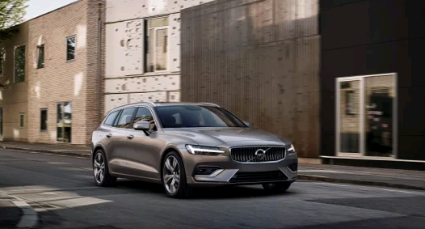

Categories
SUVs and performance models lead
the charge of the best new cars for 2018
A flood of new cars will be hitting showrooms in 2018, creating yet more choice for the buying public. Big players like Ford and Volkswagen have a hefty array of new metal, but small fries like Suzuki and Subaru also have new cars for this year.
2018 Suzuki Swift SportThe old Swift Sport was eager as a puppy but as cheap to own as a stick insect. It put a smile on your face the second you turned the key. Suzuki will be hoping this all-new version has the same effect, especially given the relative lack of character from the rest of the range, launched earlier last year. It certainly looks good on paper: a 1.4 turbocharged engine producing 138hp in a car weighing less than 970kg. |
|---|
2018 Seat TarracoSeat’s latest model, the Tarraco, has been teased by the Spanish company ahead of its launch later this year. The Taracco (named after a Spanish city) name was picked by a vote of 146,124 participants. It’s a seven-seater that will be the largest in Seat’s SUV line up, which also includes the Ateca and Arona. Sales in the UK will start in late 2018, and it’s expected to cost around £23,000, slightly undercutting the Skoda Kodiaq, from which it will share a lot of mechanical parts. |
|---|
2018 Rolls-Royce CullinanRolls-Royce is joining the SUV game at the end of the year with its highly anticipated Cullinan. Named after the largest diamond ever discovered, it's set to cost £230,000, and is the first Rolls-Royce with a tailgate. It's also the first Roller aimed at families, rather than just CEOs. Rolls-Royce says that it's a proper off-roader, as well as being designed with the driver in mind. It'll have the same 6.75-litre twin-turbo that's also found in the Rolls-Royce Phantom . |
|---|
2018 Hyundai Santa FeThe current Santa Fe is a seven-seat SUV like the Nissan X-Trail, Peugeot 5008 and Kia Sorento. its replacement will be offered with a choice of five or seven seats but will be roomier with a restyled interior. It’ll build on Hyundai’s SmartSense safety tech with family-friendly features such as Safety Exit Assist. This temporarily locks the car when sensing a vehicle approaching form the rear so that occupants can’t inadvertently open a door. |
|---|
2018 Peugeot 508Peugeot is on a roll. After a few years in the wilderness producing some humdrum cars, the French company is now launching eye-catching cars that are good to drive and great value for money. It began with the 3008 and 5008 SUVs, and the new 508 is continuing the trend. It’s too early to say how it drives, but the car’s design instantly makes rivals, such as the Volkswagen Passat, Ford Mondeo and even the Mercedes C-Class look staid. |
|---|
2018 Volvo V60After safety, the next thing Volvo is known for is estate cars, which it badges ‘V’. The new mid-size V60 will compete with the BMW 3 Series Touring and Mercedes C-class estate. It’s a smaller version of the latest large Volvos and features the same sharply-creased lines a ndminimalistic dashboard with a large touchscreen. At 529 litres, the boot is larger than rivals’ but at 1364 litres, the seats-down load area is actually smaller. On the upside, it’ll arrive with plenty of safety equipment and some semi-autonomous driving functions. Helping to keep running costs down will be a choice of hybrid petrol engines. |
|---|
2018 Ford FocusOne of Britain’s favourite family cars will be completely relaunched this year. It’s expected to catch up with the competition, especially in areas like interior space and technology, where it lags behind rivals such as the VW Golf and Vauxhall Astra . A luxurious Vignale version will be offered, as well as a taller Active model, which has more space between the bottom of the car and the ground, which makes it more capable of tackling rougher surfaces. Ford has not released many details of the new model and the image above is the only official picture so far. |
|---|
Ferrari 488 PistaWith its name including the Italian word for 'track', Ferrari's latest souped-up supercar is meant to use the knowledge gained from its racing cars for more performance on the road. Located in the middle of the car is the most powerful V8 engine that the company has ever made, producing 710 horsepower, and incorporating titanium and carbon-fibre parts to decrease weight. Other weight-saving measures have also contributed to making the car 90kg lighter than the standard 488 GTB model, launched three years ago, while the gearbox now changes shifts a fraction faster (30 milliseconds), and redesigned bodywork has made the car more aerodynamic. |
|---|
2018 Volkswagen T-RocThe name T-Roc is Volkswagen's way of signposting this small SUV as a car for the youth who don't want a fuddy duddy hatchback - even if the price means that it'll be mostly middle-aged drivers who can afford it. Smaller than the Tiguan and using the same mechanical parts as the Golf, the T-Roc offers reasonable fuel economy, with the practicality of a higher roof that's curved to make the car look sporty. The dashboard is straight out of the Golf but can be colour-matched to the exterior for a less grey look (VW promises some bold shades). There’s decent rear headroom thanks to a neat recess, while the boot is just a little bit bigger than that in the rival Audi Q2. |
|---|
2018 BMW X2It’s no Lamborghini Urus, but the BMW X2 is a more realistic prospect for most buyers looking for an SUV with a sporty design. A similar size to the current BMW X1, this new car is claimed to deliver agile cornering and rapid acceleration as soon as you put your foot to the floor. The car’s curvier looks mean that it’s likely to be less spacious and practical than the X1. It’s more expensive too, with prices around £3,000 higher than the equivalent X1. |
|---|
 Ferrari
Ferrari Honda
Honda Ford
Ford Suzuki
Suzuki Lamborghini
Lamborghini Lexus
Lexus Jaguar
Jaguar BMW
BMW GMC
GMC Mercedes-Benz
Mercedes-Benz